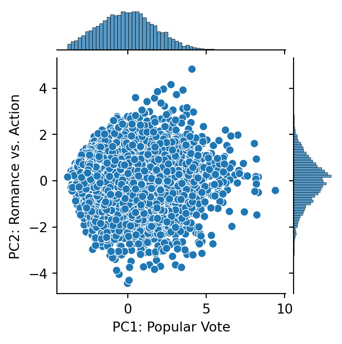

import numpy as np
import pandas as pd
ratings = pd.read_csv('../datasets/netflix/train_ratings_all.csv', header = None)
miss_cong = pd.read_csv('../datasets/netflix/train_y_rating.csv', header = None, names = ['score'])
movies = pd.read_csv('../datasets/netflix/movie_titles.csv', header = None, names = ['year', 'title'])Introduction to Data Science
Principal Components Analysis - Class 4
Giora Simchoni
gsimchoni@gmail.com and add #intro2ds in subject
Stat. and OR Department, TAU
The PCA Problem
Advanced exploration: dimensionality reduction
- We have \(n\) points in \(p\) dimensions. In the Netflix Ddataset: \(n=10^4, p=14\) (considering only the fully observed movies)
- We want to reduce the data to \(q \ll p\) dimensions (typically \(q=2\) or \(q=3\)), to:
- Identify important dimensions which summarize the data well
- Visualize the data (2-d or 3-d visualizations)
- Identify structure in the data, such as clusters
- Naive way: select \(q\) out of the original \(p\) dimensions
- For \(q=2\), we have been looking at pairwise plots of movies
- Less Naive way: Look for interesting “projections”: linear combinations of the variables which expose interesting information and patterns
Mathematical setup
We have \(n\) vectors in \({\mathbb R}^p\): \(\mathbf{x}_1, \dots, \mathbf{x}_n\)
We can desribe them thorugh a matrix \(X_{n \times p}\) (each row is an observation)
Assume for simplicity that the columns are centered: \(\sum_i x_{ij} = 0,\;\forall j\), so our data is a cloud around \(0\) in \({\mathbb R}^p\)
Total dispersion (squared distance of points from their center): \(\sum_{ij} x_{ij}^2 = ||\mathbf{x}_1||_2^2+ \dots + ||\mathbf{x}_n||_2^2 = \text{tr}(X'X)\)
Possible goal: find \(q \ll p\) good directions, such that much of the dispersion will be captured by these directions.
A direction in \({\mathbb R}^p\) is a vector \(\mathbf{v}\in {\mathbb R}^p\) with \(||\mathbf{v}||_2^2=1\)
The PCA Problem
Goal: Find the \(q\) direction(s) with the most dispersion
Projection is direction \(\mathbf{v}\): \(X\mathbf{v} \in \mathbb R^n.\) Examples:
- \(\mathbf{v} = (1,0,...,0)'\): pick first coordinate from each observation
- \(\mathbf{v} = (1/\sqrt{p},1/\sqrt{p},...,1/\sqrt{p})'\): project on diagonal (average all coordinates)
Dispersion in direction \(\mathbf{v}\): \(||X\mathbf{v}||^2 = \mathbf{v}'(X'X)\mathbf{v}.\)
Finding the best direction which maximizes dispersion: \(\mathbf{v}_1 = \arg\max_{\mathbf{v}:\|\mathbf{v}\|^2 =1} \|X\mathbf{v}\|^2\)
\(\mathbf{v}_1\) is the first Principal Component direction: the best direction to project on!
How do we find the next principal component?
Now we want a different direction \(\mathbf{v}_2\) which maximizes direction after accounting for \(\mathbf{v}_1\).
Require orthogonality: \(\mathbf{v}_2 = \arg\max_{||\mathbf{v}||^2 =1, \mathbf{v}'\mathbf{v}_1 = 0}||X\mathbf{v}||^2\)
This is the second principal direction
Can keep going looking for new directions
Assuming \(p < n\), up to \(p\) principal directions can be found this way, stack them into a \(p \times p\) “loadings” matrix \(W\)
Data with reduced dimensionality: \(T_{n \times q} = X_{n \times p}W_{p \times q}\) taking only the first \(q\) principal directions
PCA on Netflix Dataset
PCA on the Netflix data
Our Netflix dataset contains the 1-5 rankings made by 10,000 users to 99 movies.
Let \(X\) be the data matrix for the first 14 movies to which all users gave ranking.
So: \(n = 10000\) and \(p = 14\). This isn’t that “Big”, however even with 14 variables it is almost impossible to see any latent structure hidden in the data.
Let’s perform PCA!
Remember the Data
Centering the Data
array([4.1463, 4.1073, 3.7045, 4.3482, 4.0748, 4.5143, 4.4563, 3.7287,
3.7546, 3.6749, 3.7316, 4.0183, 4.0168, 3.706 ])# centering X: subtracting the mean from each column
X_centered = X - X.mean(axis=0)
print(X_centered.mean(axis=0))[-9.66338121e-17 -3.95061761e-16 1.38555833e-16 -2.87059265e-16
2.44426701e-16 -4.23483471e-16 2.94164693e-16 9.66338121e-17
6.25277607e-17 -5.68434189e-17 1.43174361e-16 1.70530257e-17
7.38964445e-17 7.36299910e-17]Performing PCA
Performing PCA in 3 lines:
What did we get?
Code
| mean_rating | PC1 | PC2 | |
|---|---|---|---|
| title | |||
| Independence Day | 4.15 | -0.25 | -0.26 |
| The Patriot | 4.11 | -0.26 | -0.06 |
| The Day After Tomorrow | 3.70 | -0.32 | -0.15 |
| Pirates of the Caribbean: The Curse of the Black Pearl | 4.35 | -0.15 | -0.03 |
| Pretty Woman | 4.07 | -0.23 | 0.45 |
| Forrest Gump | 4.51 | -0.11 | 0.01 |
| The Green Mile | 4.46 | -0.16 | 0.00 |
| Con Air | 3.73 | -0.30 | -0.32 |
| Twister | 3.75 | -0.30 | -0.14 |
| Sweet Home Alabama | 3.67 | -0.30 | 0.59 |
PC directions in a plot
Projected Data
(10000, 14)More typically we would want to reduce dimensionality:
Code

- The first PC will indicate to what extent the user conforms with the general popular vote of movies
- The second PC will indicate if the user is a romance-comedy-drama or action person
- Are there interesting clusters or people worth pointing at? Would have been nice to see users’ gender here!
And now: Miss Congeniality!
What do you expect the scores to be for users that are high on 1st PC (hate all films)?
What do you expect the scores to be for users that are low on 1st PC (love all films)
What do you expect the scores to be for users that are high on 2nd PC (like romantic films)?
What do you expect the scores to be for users that are low on 2nd PC (like action films)
PCA via SVD
Calculating Principal Components: the SVD
We have the matrix \(X_{n \times p}\) and want to find: \[\mathbf{v}_1 = \arg\max_{\mathbf{v}:\|\mathbf{v}\|^2 =1} \|X\mathbf{v}\|^2\] \[\mathbf{v}_2 = \arg\max_{\mathbf{v}:\|\mathbf{v}\|^2 =1, \mathbf{v}^T\mathbf{v}_1 = 0}\|X\mathbf{v}\|^2\] Etc.
The key: the Singular value decomposition (SVD) \(X = U D V'\), where:
- \(U_{n\times p}\) is a matrix with orthonormal columns: \(U'U = I_{p \times p}\)
- \(D_{p\times p}\) is a diagonal matrix with non-negative diagonal elements (called the Singular Values)
- \(V_{p\times p}\) is an orthogonal matrix: its columns are an orthonormal basis of \(\mathbb R^p\), \(V'V = V V' = I\).
More on the SVD
- The key: the Singular value decomposition (SVD) \(X = U D V'\), where:
- \(U_{n\times p}\) is a matrix with orthonormal columns: \(U'U = I_{p \times p}\)
- \(D_{p\times p}\) is a diagonal matrix with non-negative diagonal elements (called the Singular Values)
- \(V_{p\times p}\) is an orthogonal matrix: its columns are an orthonormal basis of \(\mathbb R^p\), \(V'V = V V' = I\).
Assuming \(d_1 > d_2 > \dots, d_p\) on the diagonal of \(D\) defines this decomposition uniquely.
Now denote the columns of \(V=[\mathbf{v}_1, \dots, \mathbf{v}_p]\), a basis of \(\mathbb R^p\), and the columns of \(U=[\mathbf{u}_1, \dots, \mathbf{u}_p]\).
Key observation: \(X\mathbf{v}_j = U D V' \mathbf{v}_j = UD \mathbf{e}_j = \mathbf{u}_j d_j\) because of orthogonality of \(V\)
Using the SVD to find the PCA
Given a vector \(\mathbf{v} \in \mathbb R^p\) with \(\|\mathbf{v}\|^2=1\), express it in the \(V\) columns basis: \(\mathbf{v} = a_1\mathbf{v}_1 + \dots + a_p \mathbf{v}_p \mbox{ with } a_1^2 + \dots + a_p^2 = 1\)
Now we can calculate its dispersion using the SVD: \(X\mathbf{v} = a_1 d_1 \mathbf{u}_1 + \dots + a_p d_p \mathbf{u}_p \Rightarrow \|X\mathbf{v}\|^2 = a_1^2 d_1^2 + \dots + a_p^2 d_p ^2\)
We know \(a_1^2 + \dots + a_p^2=1\), hence: \(\|X\mathbf{v}\|^2 \leq d_1^2.\)
But we get equality when \(\mathbf{v}=\mathbf{v}_1\), the first column of \(V\), hence \(\mathbf{v}_1\) is the first PC
Similarly the second PC is defined by \(\mathbf{v}_2\) in \(V\), and so on
PCA via Eigendecomposition
Eigendecomposition
A non-zero vector \(\mathbf{v}\) is an eigenvector of a square \(p \times p\) matrix \(\mathbf{A}\) if it satisfies: \[\mathbf{A}\mathbf{v} = \lambda\mathbf{v},\] for some scalar \(\lambda\).
Then \(\lambda\) is called the eigenvalue corresponding to \(\mathbf{v}\).
Geometrically speaking, the eigenvectors of \(\mathbf{A}\) are the vectors that \(\mathbf{A}\) merely elongates or shrinks, and the amount that they elongate/shrink by is the eigenvalue
An eigendecomposition of \(\mathbf{A}\) is then: \(\mathbf{A} = \mathbf{V}\mathbf{\Lambda}\mathbf{V}^{-1}\),
where \(\mathbf{V}\) is the square \(n \times n\) matrix whose \(j\)th column is the eigenvector \(\mathbf{v}_j\) of \(\mathbf{A}\), and \(\mathbf{\Lambda}\) is the diagonal matrix whose diagonal elements are the corresponding eigenvalues, \(\mathbf{\Lambda}_{jj} = \lambda_j\)
If \(\mathbf{A}\) is real and symmetric, \(\mathbf{V}\) is orthogonal, \(\mathbf{A} = \mathbf{V}\mathbf{\Lambda}\mathbf{V}'\) and \(\lambda_j\) are scalars
If \(\mathbf{A}\) is also positive definite (PSD), then \(\lambda_j \ge 0\)
Calculating Principal Components: the Eigendecomposition
Look again at the PCA problem: \[\mathbf{v}_1 = \arg\max_{\mathbf{v}:\|\mathbf{v}\|^2 =1} \|X\mathbf{v}\|^2\]
Using Lagrange multiplier \(\lambda_1\): \(\max_{\mathbf{v}_1}{\mathbf{v}_1'X'X\mathbf{v}_1} + \lambda_1(1 - \mathbf{v}_1'\mathbf{v}_1)\)
Take derivative with respect to \(\mathbf{v}_1\), compare to 0: \[2X'X\mathbf{v}_1 - 2\lambda_1\mathbf{v}_1 = 0 \\ X'X\mathbf{v}_1 = \lambda_1\mathbf{v}_1\]
So \(\mathbf{v}_1\) must be an eigenvector of the square, real, PSD \(X'X\) matrix, and \(\lambda_1\) its eigenvalue!
Which eigenvalue and eigenvector?
So we’re looking for the set of \(W_{p \times p}\) eigenvectors of \(X'X\) with their corresponding eigenvalues \(\lambda_1, \dots, \lambda_p\) ordered from largest to smallest.
One can also show the \(\lambda_j\) themselves are the variances of the PCs
- What is the relation to SVD?
- Let \(X = UVD'\) as before
- \(X'X = VD'U'UDV = VD'DV = VD^2V\)
- \(D^2\) is \(p \times p\) diagonal with squared singular values on diagonal
- Which means \(V\) are eigenvectors of and they’re also the required \(W\) for PCA
- Eigenvalues \(\lambda_1, \dots, \lambda_p\) are squared singular values \(d_1^2, \dots, d_p^2\)
- Either look at \(\lambda_1, \dots, \lambda_p\) or \(d_1^2, \dots, d_p^2\) for the PCs variance